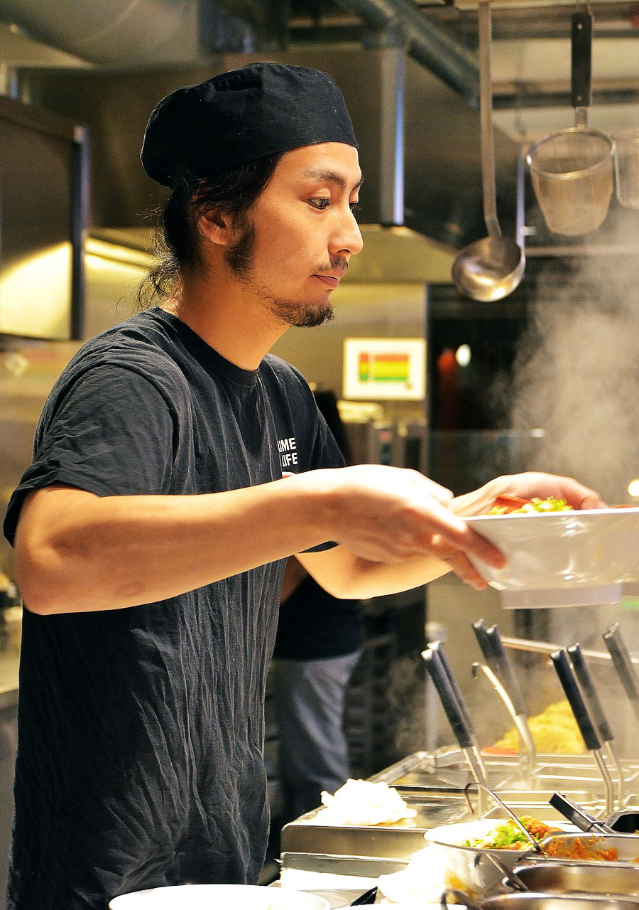
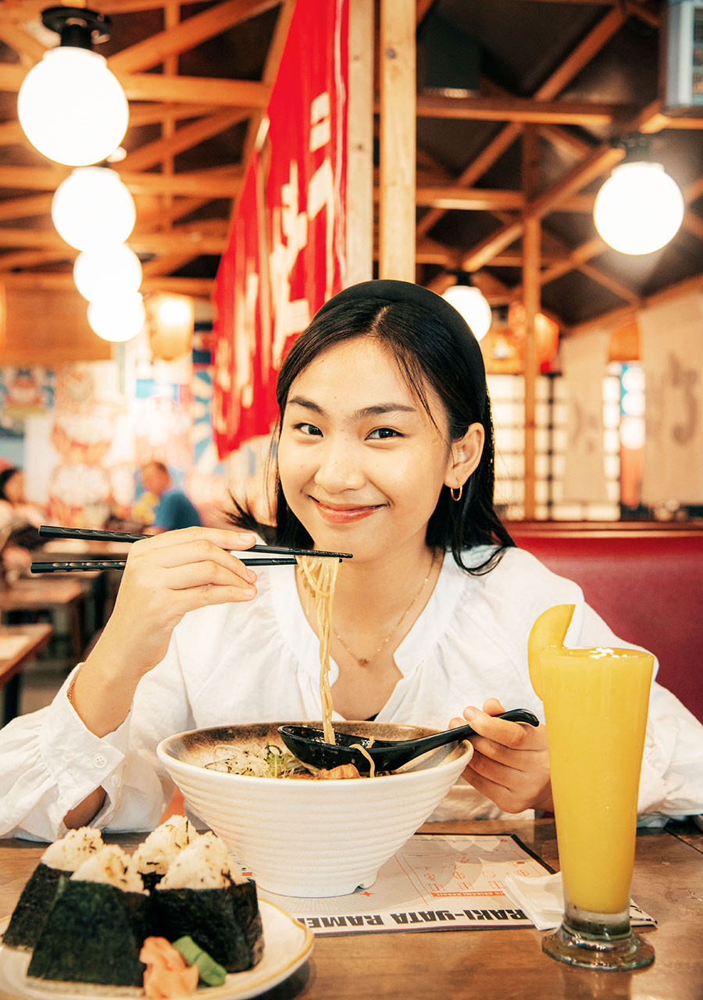
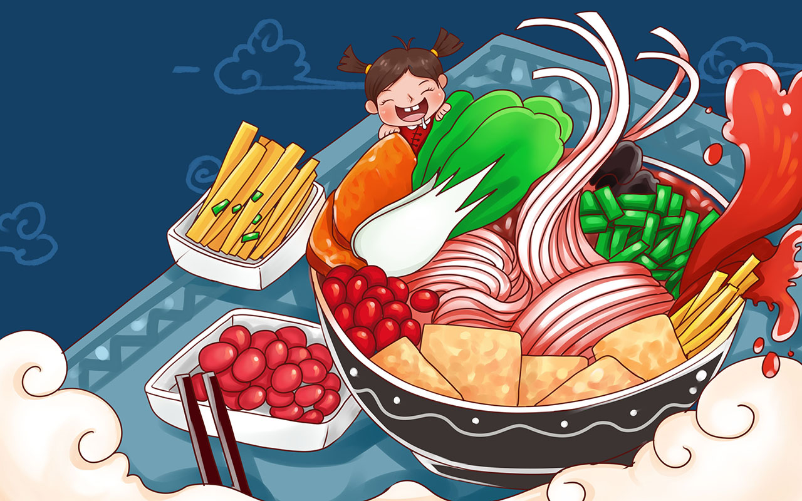
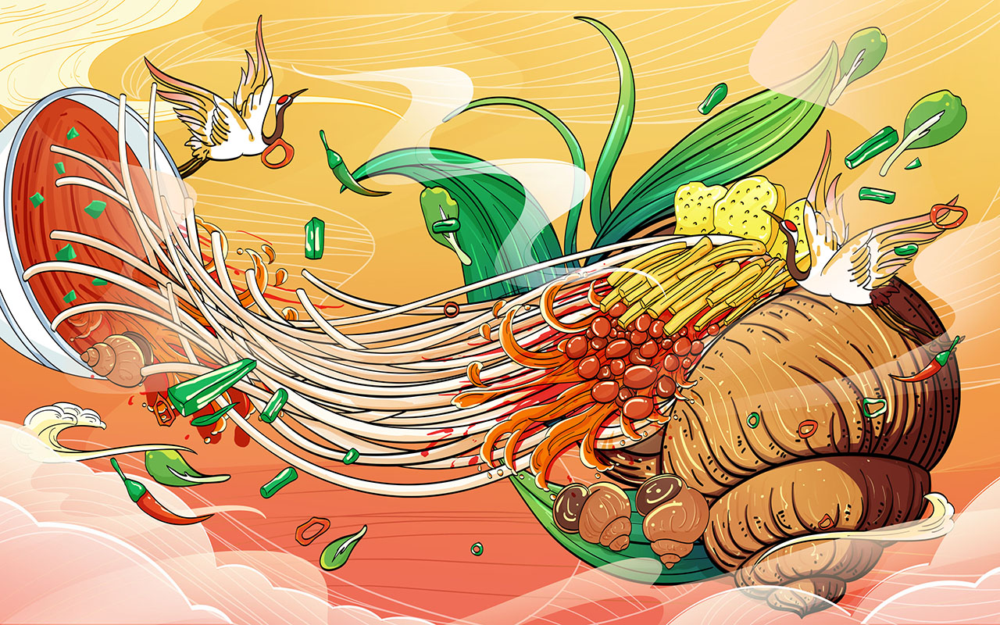

在 We Love Noodles
我們熱衷於製作一碗完美的麵條，融合正宗的風味、新鮮的食材和歷史悠久的技術。受中國豐富的麵條製作傳統的啟發，我們的使命是讓人們一起分享美味可口的手工菜餚，感受舒適和文化的精髓。每一碗食物都經過精心準備，以確保質地、味道和香氣的和諧平衡，使每一次用餐體驗都真正令人難忘。
我們的公司成立於卡加利，旅程始於一個簡單的目標——與社區分享正宗麵條菜餚的溫暖和快樂。從慢火燉煮的肉湯到新鮮製作的麵條，我們自豪地使用優質原料創造出既懷舊又令人興奮的風味。無論您想喝濃烈、辛辣的肉湯，還是清淡、可口的湯，這裡都有一碗適合您的湯。
我們相信，美食能使人們團結在一起。無論您是來享用便餐、享受舒適的美食，還是與親人共享美食，我們的餐廳都張開雙臂歡迎您的到來。今天就加入我們，了解為什麼卡加利人和我們一樣熱愛麵條！


我們的價值觀
激情與傳統的邂逅。
我們的使命
在每一碗麵條中融入傳統、創新和熱情，創造出令人難忘的麵條體驗。
我們的願景
成為卡加利品嚐正宗創新麵條菜餚的首選之地，讓人們因對美食的熱愛而相聚在一起。
我們有何特別之處？
🍜 新鮮食材：
我們致力於使用當地出產的高品質食材來讓每道菜都呈現最佳風味。從農場新鮮的蔬菜到優質肉類，每種食材都經過精心挑選，以確保新鮮、正宗和真正令人滿意的麵條體驗，讓您回味無窮。
🍜 正宗食譜：
我們的螺螄粉以中國傳統風味為靈感，精心製作，融入現代元素，創造出獨特而懷舊的體驗。我們尊重古老的烹飪技術，同時擁抱大膽的新口味，確保每一碗麵條都是真實性、創新性和對美食的熱情的美味融合。
🍜 手工麵條：
我們每天都會準備新鮮的手工麵條，以確保質地和口味的完美平衡。無論您喜歡有彈性、耐嚼還是柔軟的麵條，我們的麵條都是精心製作的，口感極佳，可以吸收我們引以為傲的濃鬱、美味的湯汁。

